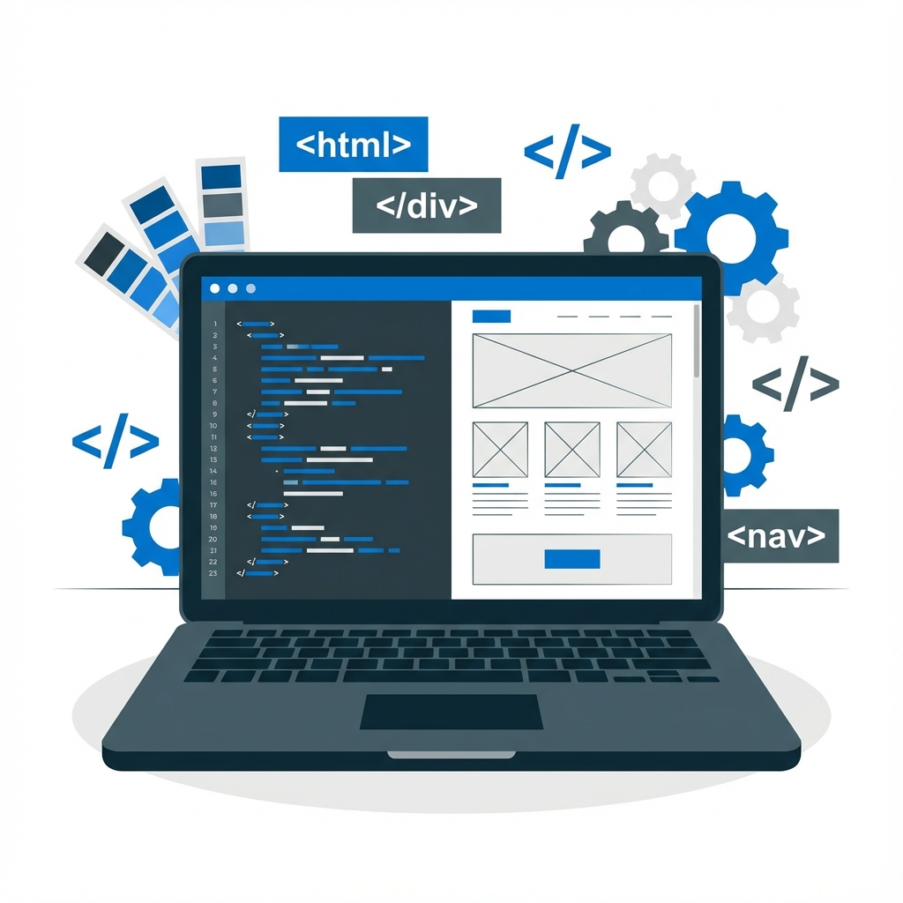
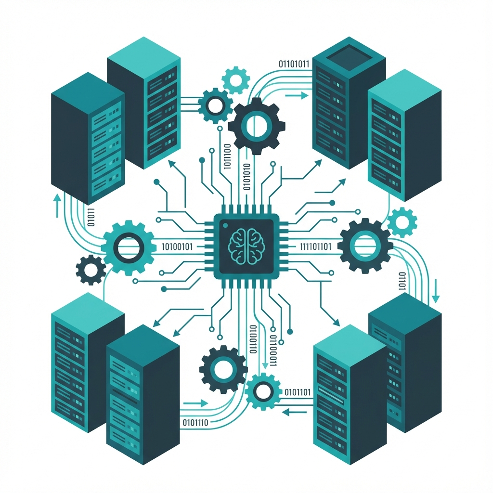
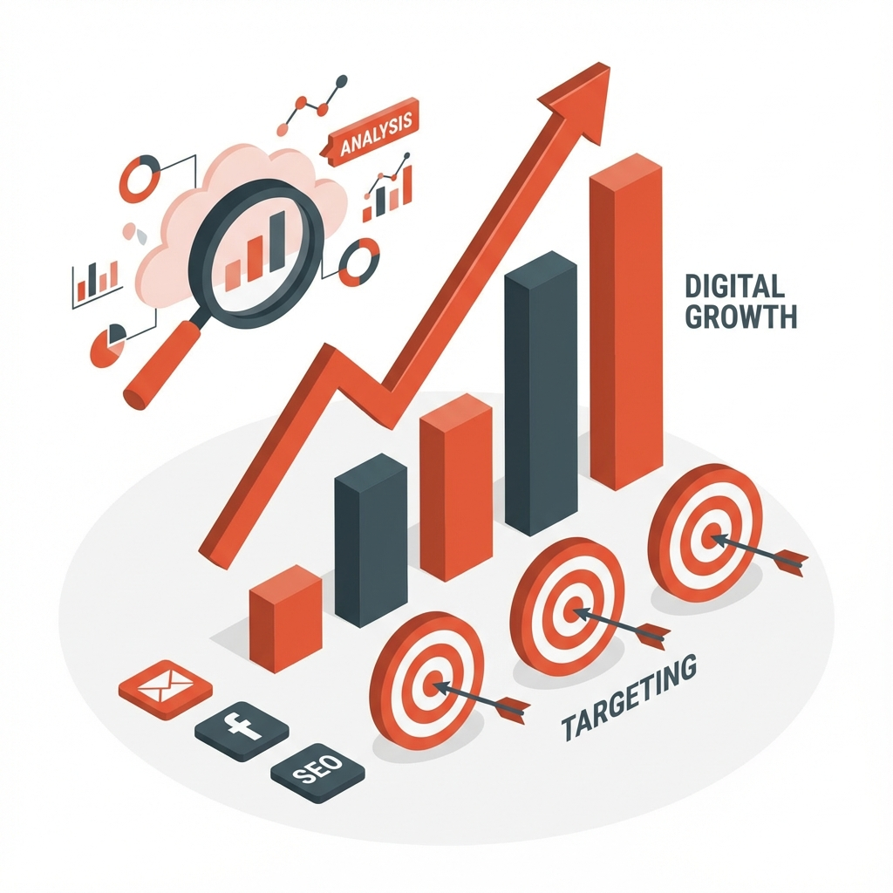
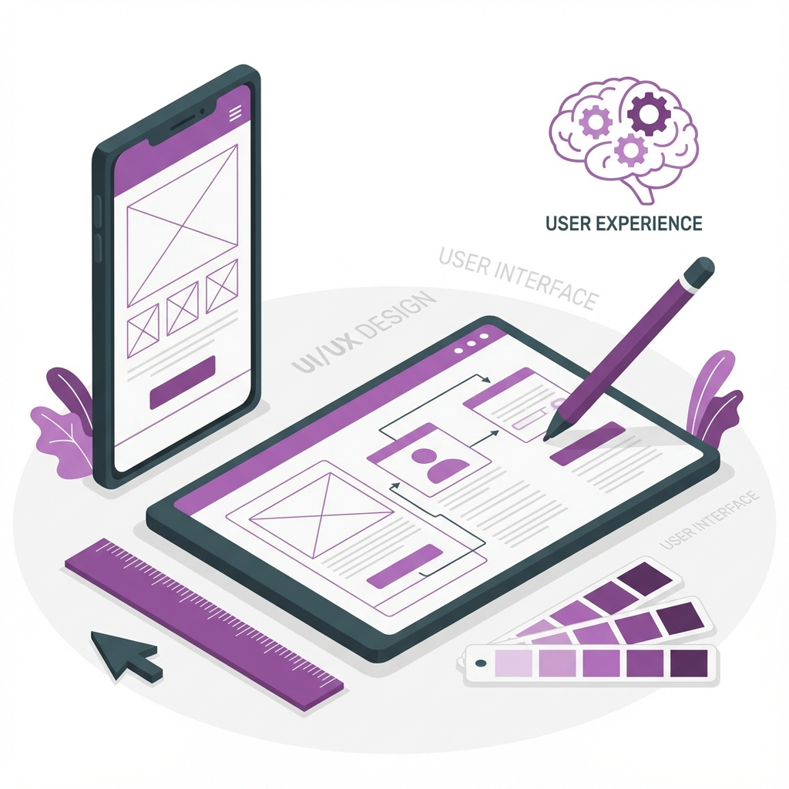

Web制作
コーポレートサイト、ランディングページ（LP）、採用サイトなど、目的に合わせたWebサイトを制作します。 単に美しいだけでなく、「誰に」「何を」伝えたいかを明確にし、成果に繋がる設計を行います。 スマートフォンへのレスポンシブ対応はもちろん、CMS（WordPress等）の導入により、公開後にお客様ご自身で更新しやすい環境を整えます。
- ヒアリング・要件定義
- UIデザイン・情報設計
- レスポンシブコーディング
- CMS（WordPress）構築

システム開発
業務効率化のための社内ツールから、顧客向けのWebアプリケーションまで、柔軟なシステム開発を提供します。 お客様の業務フローを深く理解した上で、最適な技術選定（React, Next.js, Node.js, Pythonなど）を行い、 拡張性と保守性の高いシステムを構築します。ゼロからのスクラッチ開発も、既存システムの改修も対応可能です。
- Webアプリケーション開発
- 業務システム・DX支援
- API設計・連携
- データベース設計・構築

デジタルマーケティング / SEO
Webサイトは「作って終わり」ではありません。公開後の運用こそが重要です。 Google Analyticsなどの解析ツールを用いたアクセス解析、SEO（検索エンジン最適化）対策、Web広告の運用代行などを行い、 サイトへの集客とコンバージョン（成果）の最大化をサポートします。
- アクセス解析・レポート作成
- SEO内部・外部対策
- コンテンツマーケティング支援
- Web広告運用（Google/SNS）

UI/UXデザイン
ユーザーがサービスを利用する際の「体験（UX）」を最優先に考えたデザインを行います。 現状の課題分析から、ペルソナ設定、カスタマージャーニーマップの作成、プロトタイピング、ユーザーテストまで、 一貫したデザインプロセスを通じて、使いやすく、愛されるプロダクトを創出します。
- UXリサーチ・分析
- プロトタイピング作成
- UIデザイン・デザインシステム構築
- ユーザビリティテスト
